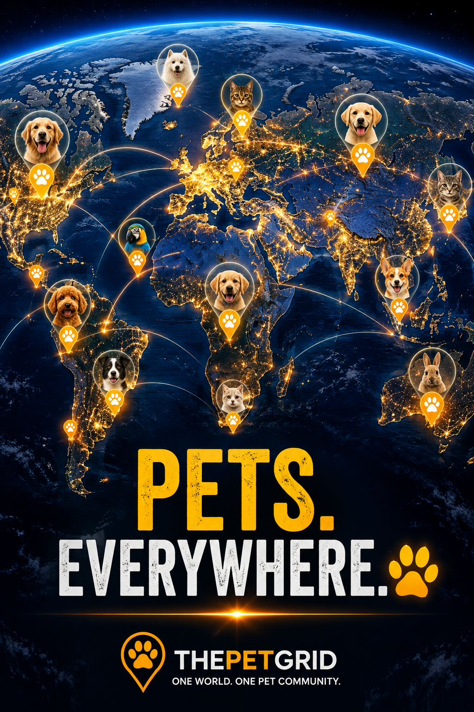

🌍 PUT YOUR PET ON THE WORLD MAP
Every Pet Has a Place on the Grid.
Create your pet's profile, place them on the global map, and join ThePetGrid from the beginning. Your pet can be one of the first on the grid.

Be One of the FirstFounding Community
WorldwideOne Global Pet Map
FreeCreate Your Pet Profile
Explore the Grid
Browse all